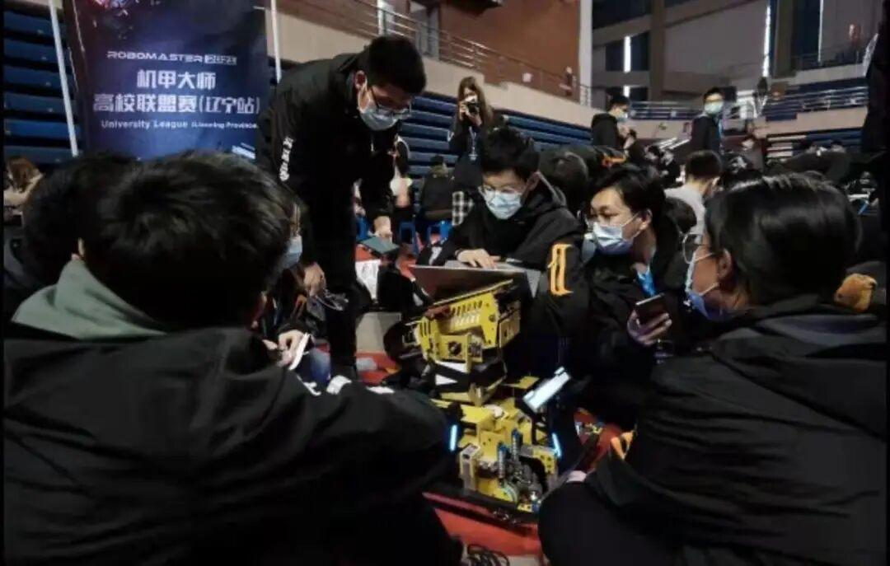
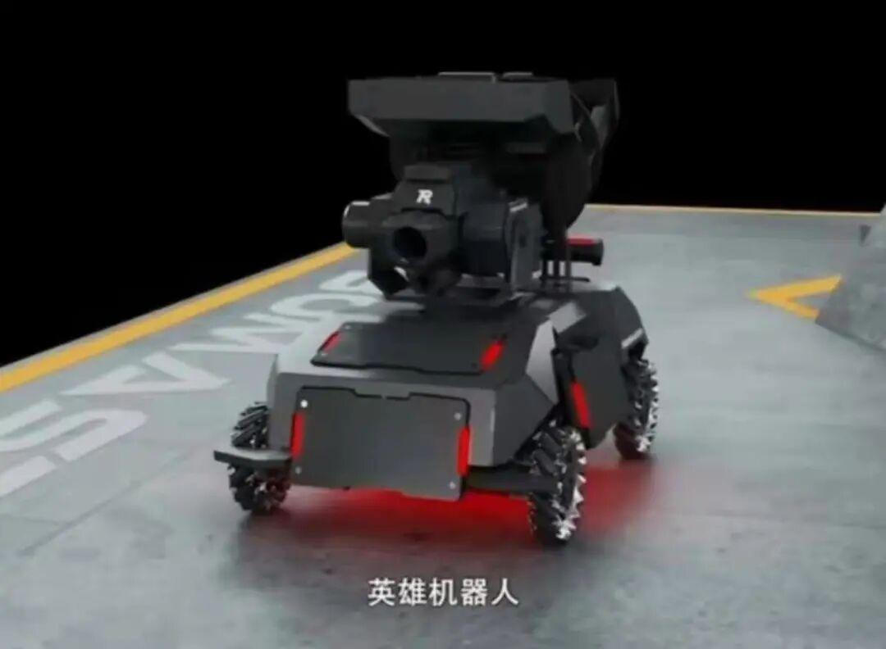
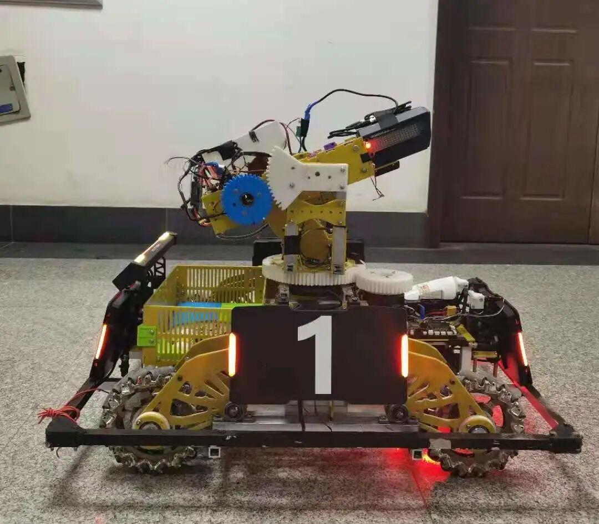
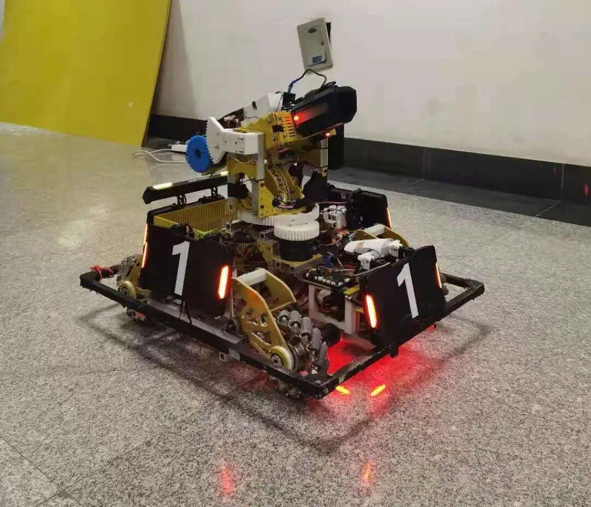
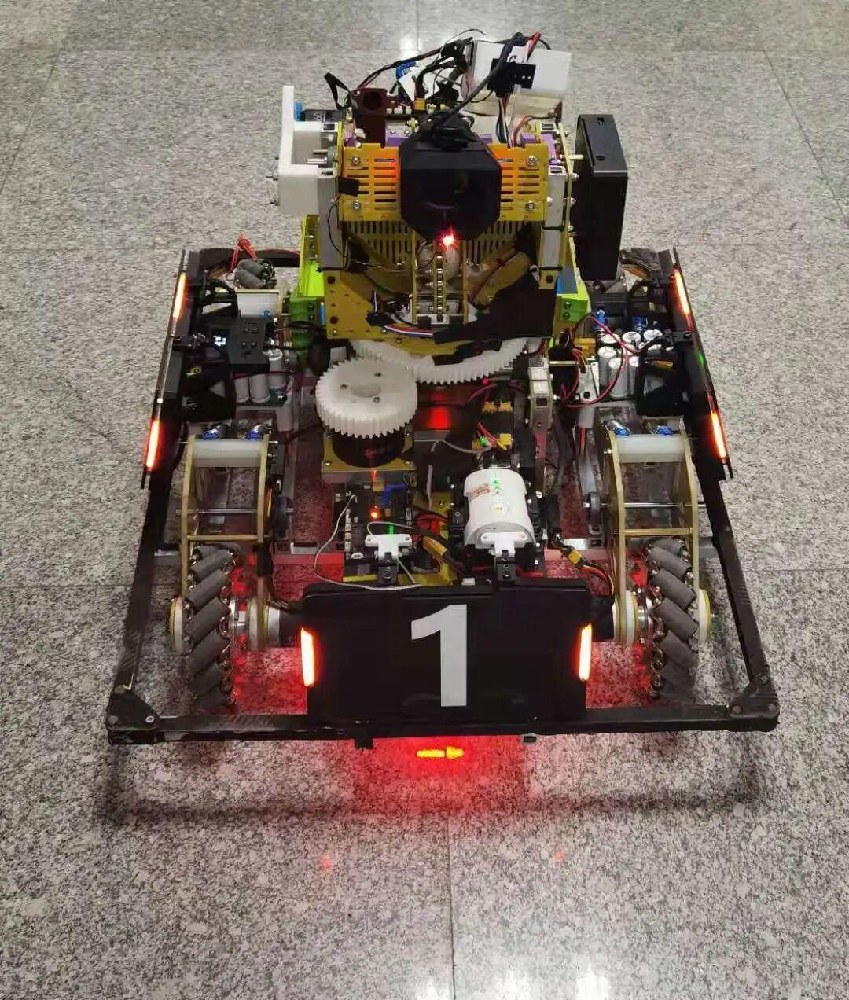

使用小程序
RoboMaster

今天我来介绍一下
每个男孩子的梦想——英雄

英雄机器人最主要的功能是能够在场上发射42mm的大弹丸来攻击敌人，一发大弹丸相当于小弹丸十倍的伤害！但由于攻速太低，我们也可以发射小弹丸弥补大弹丸伤害频率过低的缺点！
+ + + +

机器人的云台和底盘的连接是一个交叉滚子轴承和一个电环环，能够让机器人实现云台360无死角旋转，另外英雄的底盘还装有超级电容和功率控制系统，能够让机器人在有限的功率下跑的更快，以及更快的爆发加速度。
+ + + +

机器人还有pc加工业相机的组合，能够实现自动识别对方装甲板，然后锁定目标，一发入魂。
+ + + +

英雄永不止步
我们依然大步向前！
排版|孙瑛桀